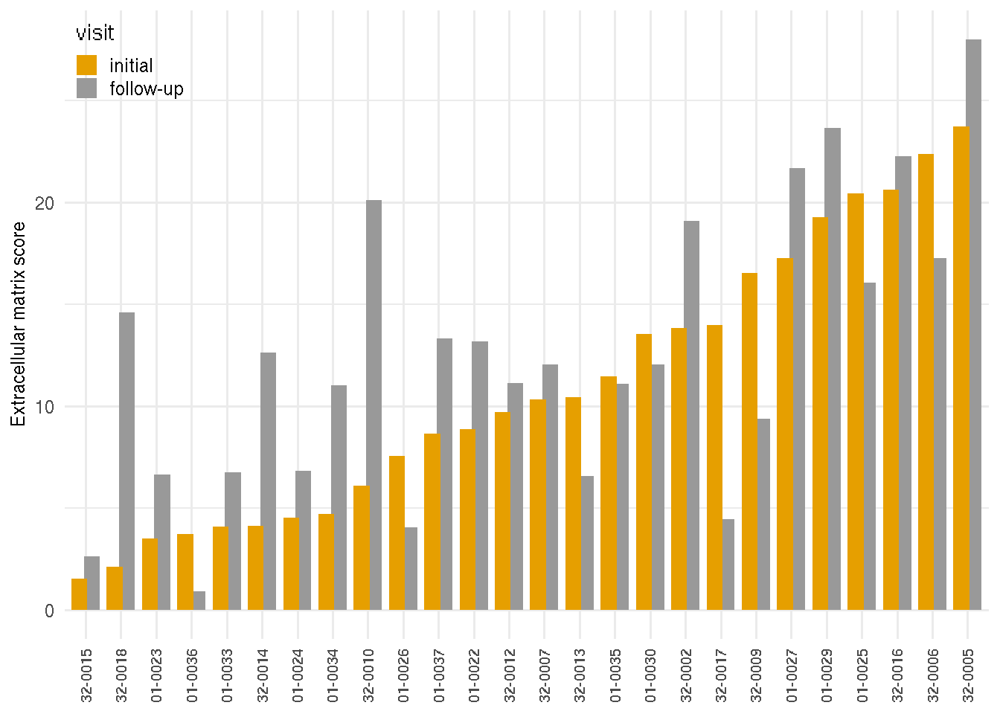
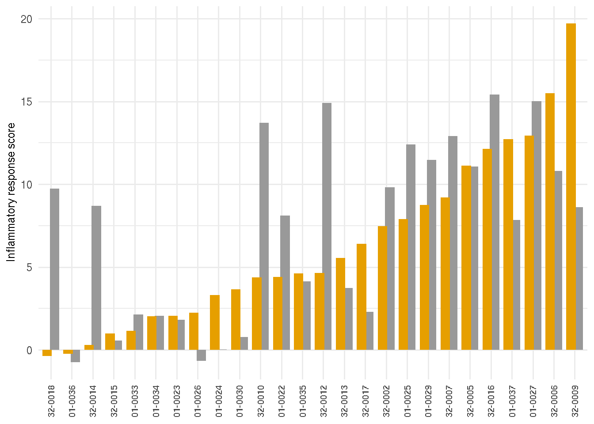
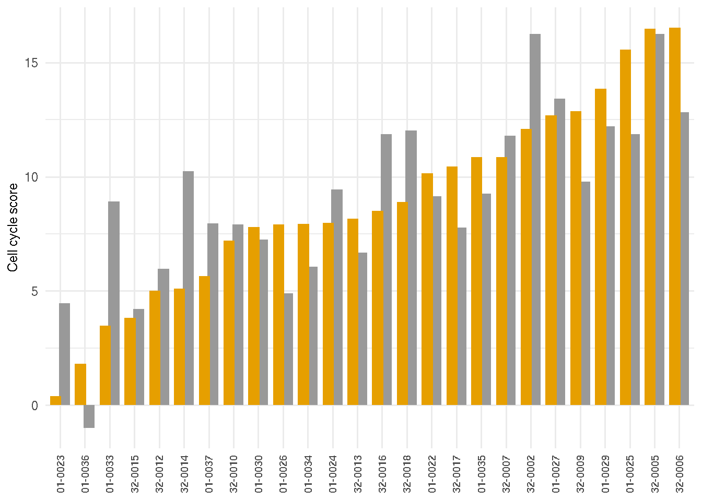
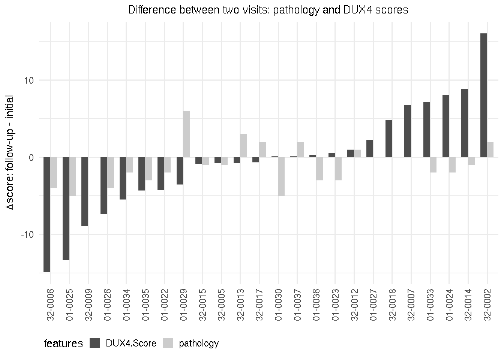
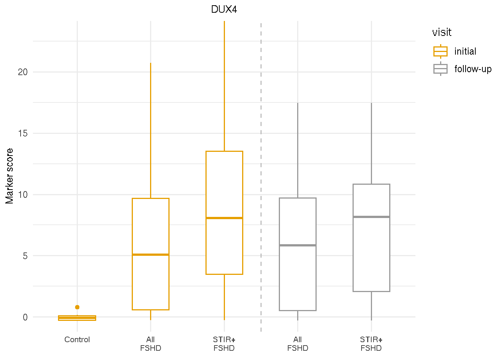
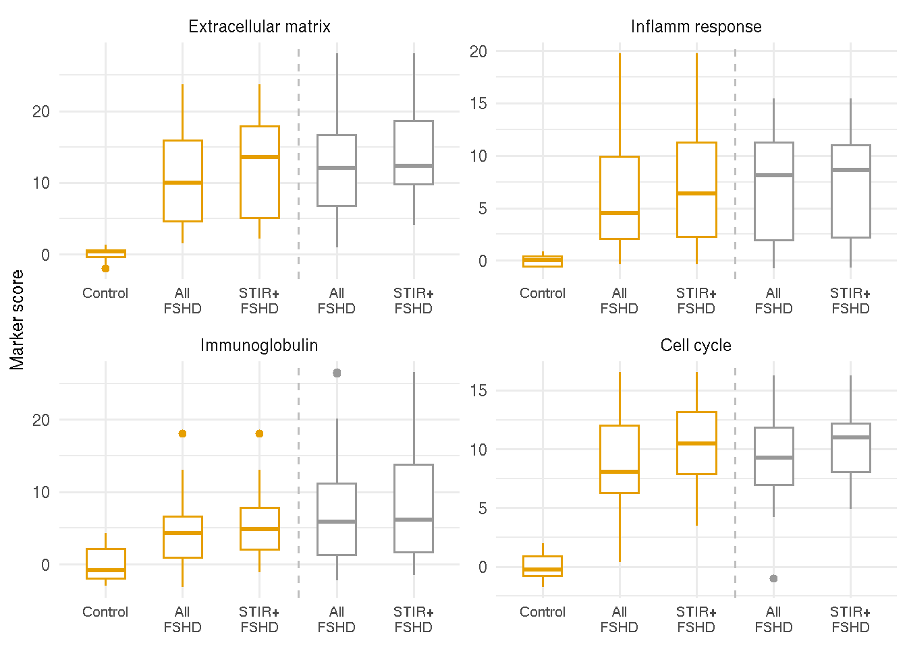

Chapter 4 Longitudinal changes over two visits
In this chapter, we look into the temporal changes in pathology scores, DUX4 target expression and MRI signals over the intial and one-year follow-up visits.
4.1 Loading datasets
Load libraries and the main dataset, sanitized.dds and histopathology scores and MRI characteristics mri_pathology.
suppressPackageStartupMessages(library(DESeq2))
suppressPackageStartupMessages(library(tidyverse))
suppressPackageStartupMessages(library(ggplot2))
suppressPackageStartupMessages(library(dplyr))
pkg_dir <- "/fh/fast/tapscott_s/CompBio/RNA-Seq/hg38.FSHD.biopsy.all"
source(file.path(pkg_dir, "scripts", "manuscript_tools.R"))
load(file.path(pkg_dir, "public_data", "sanitized.dds.rda"))
load(file.path(pkg_dir, "public_data", "mri_pathology.rda"))4.2 Pathology scores
The following chunk cleans the mri_pathology object: removing un-paired samples or samples without data.
path_score <- bind_rows(mri_pathology$time_1, mri_pathology$time_2) %>%
mutate(visit = ifelse(visit=="I", "initial", "follow-up")) %>%
mutate(visit = factor(visit, levels=c("initial", "follow-up"))) %>%
dplyr::filter(!is.na(paired)) %>%
dplyr::filter(!is.na(Pathology.Score)) %>%
dplyr::filter(!patient_id %in% c("32-0008", "32-0010", "32-0016")) The medians of pathology score for intial and follow-up visits are summarized below.
path_sum <- path_score %>% group_by(visit) %>%
summarize(median=median(Pathology.Score),
mean=mean(Pathology.Score),
sd=sd(Pathology.Score))
knitr::kable(path_sum, caption="Summary of pathology score by visits.")| visit | median | mean | sd |
|---|---|---|---|
| initial | 5 | 5.333333 | 2.425708 |
| follow-up | 3 | 4.416667 | 3.202128 |
The population-level median of the follow-up visits is lower than that of the initial visits.
gg <- ggplot(path_score, aes(x=Pathology.Score, color=visit, fill=visit)) +
geom_density(alpha=0.5) +
scale_fill_manual(values=c("#E69F00", "#999999")) +
scale_color_manual(values=c("#E69F00", "#999999")) +
theme_bw() +
theme(legend.justification=c(1,1), legend.position=c(0.99, 0.99),
legend.key.size = unit(0.8, "line"),
legend.title=element_blank(),
plot.title = element_text(hjust=0.5, size=10),
axis.title = element_text(size=9),
axis.text=element_text(size=7)) +
labs(title="Density of pathology score", x="Pathloby score")
gg <- gg + geom_vline(data=path_sum, aes(xintercept=median, color=visit),
linetype="dashed", show.legend=FALSE)
gg## Warning in grid.Call.graphics(C_polygon, x$x, x$y, index): semi-
## transparency is not supported on this device: reported only once per pageFigure 4.1: Distribution of the initial and follow-up visits.
4.3 Change of marker scores over two visits
The marker scores of RNA-seq biopsy samples are the summation of relative local rlog expression of discriminative genes based on the sample PCA loading variables on the follow-up visit. The DUX4 score of RNA-seq biopsy samples was based on four FSHD/DUX4-positive biomarkers that were previously found in Yao 2014(Yao and al. 2014): LEUTX, KHDG1L, PRAMEF2 and TRIM43. The score is the sum of these four biomarker local regularized log scaling difference from the control average. The DUX4 scores are similar or show progression from the first visit to the follow-up visit. A few individuals, on the other hand, are showing otherwise. Additional markers include the extracellular matrix score, based on PLA2GA, COL19A1, COMP, and COL1A1; immune/inflammation score based on CCL18, CCL13, C6 and C7; immunoglobulin score based on IGHA1, IGHG4 and IGHGP. The cell cycle score was based on CCNA1, CDKN1A and CDKN2A.
The following barplots present the changes of marker scores over two visits. Samples are arranged by the ascending values of the initial visits.
markers_list <-
list(dux4 = c("LEUTX", "KHDC1L", "PRAMEF2", "TRIM43"),
extracellular_matrix = c("PLA2G2A", "COL19A1", "COMP", "COL1A1"), # remove SFPR2
inflamm = c("CCL18", "CCL13" ,"C6", "C7"), # remove CCL19
cell_cycle = c("CCNA1", "CDKN1A", "CDKN2A"), # newly added
immunoglobulin = c("IGHA1", "IGHG4", "IGHGP")) #delete IGKV3-11
markers_id_list <- lapply(markers_list, get_ensembl, rse=sanitized.dds)
relative_rlg <- lapply(markers_id_list, .get_sum_relative_local_rlg,
dds = sanitized.dds)
# calculate the score
scores <- as.data.frame(do.call(cbind, relative_rlg)) %>%
rename(dux4.rlogsum=dux4, ecm.rlogsum=extracellular_matrix, inflamm.rlogsum=inflamm,
cellcycle.rlogsum=cell_cycle,
img.rlogsum=immunoglobulin) %>%
rownames_to_column(var="sample_name") %>%
mutate(pheno_type = sanitized.dds[, sample_name]$pheno_type,
paired = sanitized.dds[, sample_name]$paired,
patient_id = sanitized.dds[, sample_name]$patient_id,
visit = sanitized.dds[, sample_name]$visit) %>%
mutate(visit = factor(ifelse(visit=="I", "initial", "follow-up"),
levels=c("initial", "follow-up"))) %>%
dplyr::filter(pheno_type == "FSHD") %>%
dplyr::filter(!is.na(paired)) %>%
dplyr::filter(patient_id != "32-0008") 4.3.1 DUX4 marker scores
tmp <- scores %>% dplyr::filter(visit=="initial") %>% arrange(dux4.rlogsum)
patient_id <- as.character(tmp$patient_id)
scores$patient_id <- factor(scores$patient_id, levels=patient_id)
gg_dux4 <- ggplot(scores, aes(y=dux4.rlogsum, x=patient_id, fill=visit)) +
geom_bar(stat="identity", position=position_dodge(0.7)) +
theme_minimal() +
labs(y="DUX4 score") +
scale_fill_manual(values=c("#E69F00", "#999999")) +
theme(axis.title.x=element_blank(),
axis.title.y=element_text(size=9),
axis.text.x=element_text(angle=90, vjust=0.5, hjust=1, size=8),
legend.justification=c(0,1), legend.position=c(0, 1),
legend.key.size = unit(0.8, "line"))
gg_dux4Figure 4.2: DUX4 marker scores by visits.
4.3.2 Extracellular matrix structure scores
tmp <- scores %>% dplyr::filter(visit=="initial") %>% arrange(ecm.rlogsum)
patient_id <- as.character(tmp$patient_id)
scores$patient_id <- factor(scores$patient_id, levels=patient_id)
gg_ecm <- ggplot(scores, aes(y=ecm.rlogsum, x=patient_id, fill=visit)) +
geom_bar(stat="identity", position=position_dodge(0.7)) +
theme_minimal() +
labs(y="Extracellular matrix score") +
scale_fill_manual(values=c("#E69F00", "#999999")) +
theme(axis.title.x=element_blank(),
axis.title.y=element_text(size=9),
axis.text.x=element_text(angle=90, vjust=0.5, hjust=1, size=8),
legend.justification=c(0,1), legend.position=c(0, 1),
legend.key.size = unit(0.8, "line"))
gg_ecm
4.3.3 Immuse response/Inflammatory score
tmp <- scores %>% dplyr::filter(visit=="initial") %>% arrange(inflamm.rlogsum)
patient_id <- as.character(tmp$patient_id)
scores$patient_id <- factor(scores$patient_id, levels=patient_id)
gg_inflam <- ggplot(scores, aes(y=inflamm.rlogsum, x=patient_id, fill=visit)) +
geom_bar(stat="identity", position=position_dodge(0.7)) +
theme_minimal() +
labs(y="Inflammatory response score") +
scale_fill_manual(values=c("#E69F00", "#999999")) +
theme(axis.title.x=element_blank(),
axis.title.y=element_text(size=9),
axis.text.x=element_text(angle=90, vjust=0.5, hjust=1, size=8),
legend.justification=c(0,1), legend.position="none",
legend.key.size = unit(0.8, "line"))
gg_inflam
4.3.4 Immunoglobulin score
tmp <- scores %>% dplyr::filter(visit=="initial") %>% arrange(img.rlogsum)
patient_id <- as.character(tmp$patient_id)
scores$patient_id <- factor(scores$patient_id, levels=patient_id)
gg_img <- ggplot(scores, aes(y=img.rlogsum, x=patient_id, fill=visit)) +
geom_bar(stat="identity", position=position_dodge(0.7)) +
theme_minimal() +
labs(y="Immunoglobulins score") +
scale_fill_manual(values=c("#E69F00", "#999999")) +
theme(axis.title.x=element_blank(),
axis.title.y=element_text(size=9),
axis.text.x=element_text(angle=90, vjust=0.5, hjust=1, size=8),
legend.justification=c(0,1), legend.position="none",
legend.key.size = unit(0.8, "line"))4.3.5 Cell cycle score
tmp <- scores %>% dplyr::filter(visit=="initial") %>% arrange(cellcycle.rlogsum)
patient_id <- as.character(tmp$patient_id)
scores$patient_id <- factor(scores$patient_id, levels=patient_id)
gg_cycle <- ggplot(scores, aes(y=cellcycle.rlogsum, x=patient_id, fill=visit)) +
geom_bar(stat="identity", position=position_dodge(0.7)) +
theme_minimal() +
labs(y="Cell cycle score") +
scale_fill_manual(values=c("#E69F00", "#999999")) +
theme(axis.title.x=element_blank(),
axis.title.y=element_text(size=9),
axis.text.x=element_text(angle=90, vjust=0.5, hjust=1, size=8),
legend.justification=c(0,1), legend.position="none",
legend.key.size = unit(0.8, "line"))
gg_cycle
4.4 Pathology and DUX4 scores changes
The direction of change for DUX4 and over pathology scores were mostly in the same direction, with a few (15%) exception. Chunk and figure below show the pathology (grey) and DUX4 scores (darker) changes over the initial and follow-up visits for each individual. Y-axis represents the values of the follow-up visit minus the initial visit.
year1_scores <- scores %>% dplyr::filter(visit == "initial")
year2_scores <- scores %>% dplyr::filter(visit == "follow-up")
delta_scores <- inner_join(year1_scores, year2_scores, by="patient_id",
suffix=c(".I", ".II")) %>%
mutate(patient_id = as.character(patient_id),
dux4 = dux4.rlogsum.II - dux4.rlogsum.I,
ecm = ecm.rlogsum.II - ecm.rlogsum.I,
inflamm = inflamm.rlogsum.II - inflamm.rlogsum.I,
img = img.rlogsum.II - img.rlogsum.I,
cycle = cellcycle.rlogsum.II - cellcycle.rlogsum.I) %>%
dplyr::select(patient_id, dux4, ecm, inflamm, img, cycle)
delta_clinic <- left_join(mri_pathology$time_1, mri_pathology$time_2, by="patient_id",
suffix=c(".I", ".II")) %>%
dplyr::filter(!is.na(paired.I)) %>%
mutate(pathology = Pathology.Score.II - Pathology.Score.I) %>%
mutate(STIR = STIR_rating.II - STIR_rating.II,
T1 = T1_rating.II - T1_rating.I) %>%
select(patient_id, pathology, STIR, T1)
comb_delta <- full_join(delta_scores, delta_clinic, by="patient_id") %>%
dplyr::filter(!is.na(pathology)) %>%
dplyr::filter(!is.na(dux4)) %>%
dplyr::select(patient_id, dux4, pathology) %>%
dplyr::rename(DUX4.Score=dux4) %>%
arrange(DUX4.Score) %>%
mutate(patient_id = as.character(patient_id)) %>%
mutate(patient_id = factor(patient_id, levels=as.character(patient_id)))
melt_scores <- gather(comb_delta, "features", "delta_scores", -patient_id)
gg <- ggplot(melt_scores, aes(y=delta_scores, x=patient_id, fill=features,
group=features)) +
geom_bar(stat="identity", position=position_dodge(), width=0.7) +
theme_minimal() +
labs(y=expression(paste(Delta, "score: follow-up - initial")) ,
title="Difference between two visits: pathology and DUX4 scores" ) +
theme(axis.title.x=element_blank(), plot.title=element_text(hjust=0.5, size=11),
axis.text.x=element_text(angle=90, vjust=0.5, hjust=1),
legend.key.size = unit(0.8, "line"),
legend.justification=c(0,1), legend.position="bottom") +
scale_fill_manual(values=c("grey30", "grey80"))
gg
4.5 Markers by visits and STIR ratings
Although with-in indivudual variation are observed, the expression of DUX4 markers (and other markers) is stable on the population level. Showing below is the DUX4 score comparison between two visits and between all FSHD or T2-STIR-positive FSHD compared to controls. The DUX4 score exhibited elevated DUX4-target expression in all FSHD and T2-STIR-positive FSHD compared to controls in both visits.
4.5.1 DUX4 scores and STIR ratings
load(file.path(pkg_dir, "public_data", "marker_path_scores.rda"))
.mutate_row <- function(self) {
stir <- self %>% dplyr::filter(STIR_status == "STIR+") %>%
mutate(status = "STIR+")
bind_rows(self, stir)
}
tmp <- marker_path_scores %>%
mutate(status=ifelse(pheno_type=="Control", "Control", "Total")) %>%
group_by(visit) %>% .mutate_row(.) %>% ungroup(.) %>%
mutate(group=paste0(visit, "_", status)) %>%
mutate(group=factor(group, levels=c("initial_Control", "initial_Total", "initial_STIR+",
"follow-up_Total", "follow-up_STIR+"))) %>%
mutate(visit = factor(visit, levels=c("initial", "follow-up")))
gg <- ggplot(tmp, aes(x=group, y=dux4.rlogsum, group=group)) +
geom_boxplot(aes(color=visit), width=0.5) +
scale_fill_manual(values=c("#E69F00", "#999999")) +
scale_color_manual(values=c("#E69F00", "#999999")) +
theme_minimal() +
geom_vline(xintercept=3.5, linetype="dashed", color = "grey") +
theme(#legend.position=c(0.01,0.99),
legend.position="right",
legend.justification=c(0,1),
#legend.key.size = unit(0.7, "line"),
plot.title = element_text(hjust = 0.5, size=10),
axis.title.x=element_blank(),
axis.text.x = element_text(size=8),
axis.title.y=element_text(size=10)) +
labs(y="Marker score", title="DUX4") +
scale_x_discrete(labels=c("Control", "All\nFSHD", "STIR+\nFSHD", "All\nFSHD", "STIR+\nFSHD")) +
coord_cartesian(ylim=c(-0.05, 23))
gg
4.5.2 Other markers
Similar to DUX4 marker score, extracellular matrix, inflammatory/immune response, immunoglobulin and cell cycle scores are eleveated in the first and follow-up visit samples, comparing all FSHD samples or all T2-STIR-positive FSHD samples to controls.
tmp2 <- tmp %>%
select(sample_name, ecm.rlogsum, inflamm.rlogsum, img.rlogsum,
cellcycle.rlogsum, group, visit) %>%
gather(markers, scores, -sample_name, -group, -visit) %>%
mutate(markers = factor(markers,
levels=c("ecm.rlogsum", "inflamm.rlogsum",
"img.rlogsum", "cellcycle.rlogsum")))
labels <- c(ecm.rlogsum="Extracellular matrix",
inflamm.rlogsum="Inflamm response",
img.rlogsum="Immunoglobulin",
cellcycle.rlogsum="Cell cycle")
gg <- ggplot(tmp2, aes(x=group, y=scores, group=group)) +
geom_boxplot(aes(color=visit), width=0.5) +
scale_fill_manual(values=c("#E69F00", "#999999")) +
scale_color_manual(values=c("#E69F00", "#999999")) +
theme_minimal() +
labs(y="Marker score") +
geom_vline(xintercept=3.5, linetype="dashed", color = "grey") +
facet_wrap( ~ markers, nrow=2, scale="free", labeller=labeller(markers=labels)) +
theme(legend.position = "none",
axis.title.x=element_blank(),
axis.title.y=element_text(size=10),
axis.text.x = element_text(size=8)) +
scale_x_discrete(labels=c("Control", "All\nFSHD", "STIR+\nFSHD", "All\nFSHD", "STIR+\nFSHD"))
gg
References
Yao, Zizhen, and et al. 2014. “DUX4-Induced Gene Expression Is the Major Molecular Signature in Fshd Skeletal Muscle.” Human Molecular Genetics. doi:10.1093/hmg/ddu251.